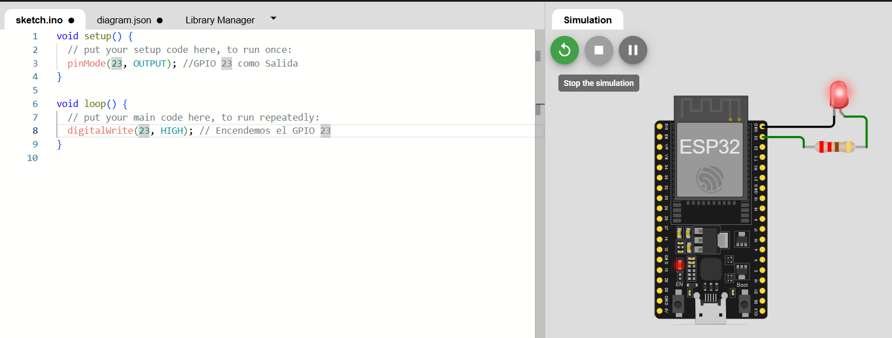
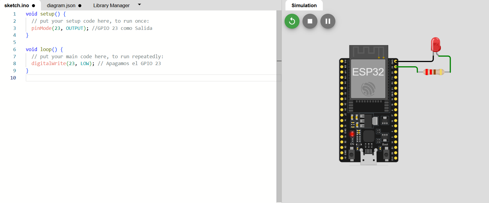
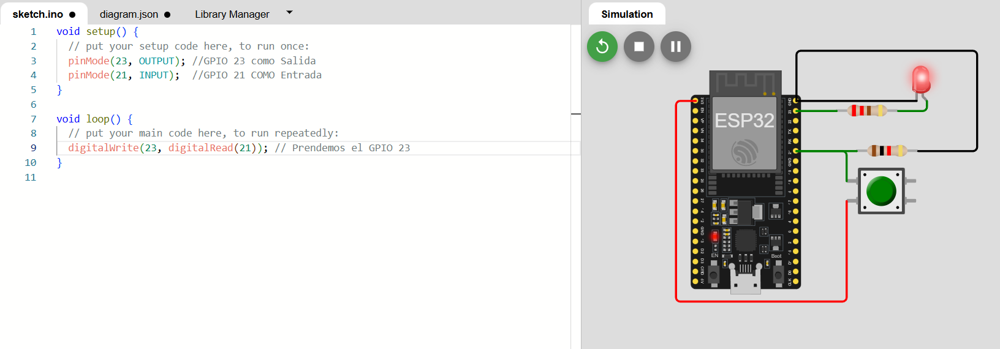

Practica 3
Laboratorio de Redes Digitales de Datos
Departamento de Ciencias e Ingenierías | Universidad Iberoamericana Puebla, México.
ESP32 Entradas y Salidas

- Resumen -
En esta práctica, exploraremos la conexión y el uso de la plataforma ThingSpeak con módulos ESP32 y ESP8266. Aprenderemos a configurar ThingSpeak, conectar nuestros ESP a través de WiFi y enviar datos de sensores digitales (botón), analógicos (potenciómetro) e inteligentes (DHT22) a la plataforma para su visualización y monitoreo. Además, integraremos un sensor PIR para crear un tablero público en ThingSpeak que muestre el estado del sensor en tiempo real, demostrando la capacidad de ThingSpeak para aplicaciones de monitoreo remoto e IoT.
- Introducción -
En la era del Internet de las Cosas (IoT), la capacidad de recopilar
y analizar datos de sensores de forma remota es fundamental.
ThingSpeak, una plataforma de código abierto, nos brinda las
herramientas necesarias para lograr precisamente eso. En esta
práctica, nos sumergiremos en el mundo de ThingSpeak y aprenderemos
a utilizarlo con nuestros ESP32 y ESP8266.
ThingSpeak nos permite crear "canales" para almacenar datos de
sensores en la nube. Luego, podemos visualizar estos datos en tiempo
real a través de gráficos y dashboards, lo que facilita el monitoreo
y análisis de la información. Además, ThingSpeak ofrece
funcionalidades para configurar alertas y desencadenar acciones
basadas en los datos recibidos.
Trabajaremos con diferentes tipos de sensores: digitales, analógicos
e inteligentes. Los conectaremos a nuestros ESP32 y ESP8266, que
actuarán como intermediarios para enviar los datos a ThingSpeak a
través de WiFi.
- Materiales -
- NodeMCU ESP8266 o ESP32
- LED
- Resistencia de 220 Ohms
- Botón
- Resistencia de 1 Kohm
- Potenciómetro
- Sensor DHT2
- Sensor PIR
- Protoboard
- Cables
- Desarrollo -
1. Configuración del IDE de Arduino:
- Se debe instalar el soporte para el ESP32 en el IDE de Arduino
siguiendo los tutoriales de configuración proporcionados.
- Revisar el pinout del ESP32 para identificar los pines GPIO
disponibles.
2. Programación de encendido y apagado de un LED:
- Se desarrollará un programa simple para encender un LED en un pin
digital específico.
- Se desarrollará otro programa para
apagar el LED.
3. Encendido y apagado del LED con retardos:
- Se implementará un programa que encienda y apague el LED
alternadamente con retardos.
4. Control del LED mediante botones:
- Se desarrollará un programa que permita encender y apagar el LED
mediante la presión de un botón.
5. Uso de dos botones con condicional OR:
- Se implementará un programa que encienda el LED si se presiona
cualquiera de los dos botones.
6. Uso de dos botones con condicional AND:
- Se desarrollará un programa que encienda el LED solo si ambos
botones son presionados simultáneamente.
Simulación
Se utilizará Wokwi para simular cada uno de los circuitos desarrollados en los objetivos anteriores. En cada simulación se probarán los diferentes programas para asegurarse de que los sistemas funcionan correctamente antes de implementar el hardware real. Se incluirán capturas de pantalla de las simulaciones y videos de las pruebas realizadas.
Encendido de un led

Apagado de un led

Encendido y apagado de un led mediante botones

Diseño
El diseño del sistema consta de un NodeMCU ESP32 conectado a un LED y botones que permiten controlar el estado del LED. Cada uno de los botones se conectará a un pin digital del ESP32, y el LED se conectará a otro pin digital. El diseño del circuito se ilustrará mediante un diagrama esquemático que se incluirá en el reporte.
Construcción
El circuito se construirá en una protoboard, conectando el ESP32 a los componentes (LED y botones) utilizando cables adecuados. Las conexiones se realizarán siguiendo el diagrama de diseño. Una vez construido el circuito, se cargarán los programas desarrollados en el IDE de Arduino para probar su funcionamiento.
- Resultados -
Los resultados obtenidos permitirán observar cómo los diferentes
programas controlan el LED mediante las entradas digitales. En la
simulación, se verificarán los siguientes comportamientos:
- Encendido y apagado del LED según los programas.
- Control del LED con los botones utilizando las condiciones OR y
AND.
- Conclusiones -
Con esta práctica, se ha logrado entender el funcionamiento básico de las entradas y salidas digitales del ESP32, utilizando el módulo para controlar un LED a través de botones y condiciones lógicas. Los programas fueron probados tanto en simulación como en hardware real, demostrando la efectividad de los métodos utilizados. Este conocimiento es fundamental para el desarrollo de proyectos más complejos basados en el ESP32.
- Referencias -
Gomez, S. B., & Herrera, H. J. R. (2022). Sistema IoT basado en ESP32 para el control y monitoreo de cultivos en invernadero con enfoque de agricultura 4.0. Ingeniería investiga, 4.
Madakam, S., Ramaswamy, R., & Tripathi, S. (2015). Internet of Things (IoT): A literature review. Journal of Computer and Communications, 3(5), 164-173.
Gokhale, P., Bhat, O., & Bhat, S. (2018). Introduction to IOT. International Advanced Research Journal in Science, Engineering and Technology, 5(1), 41-44.
- Descargables -
Descargar documento PDF: documento.pdf
Descargar codigo Arduino: codigo.ino
Descargar Archivo 3d .STL: pieza.stl